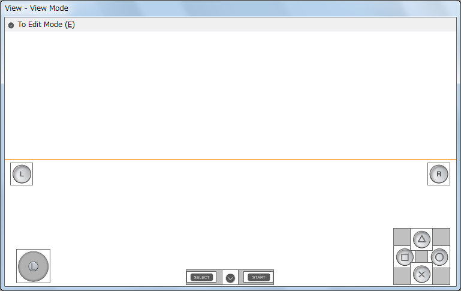
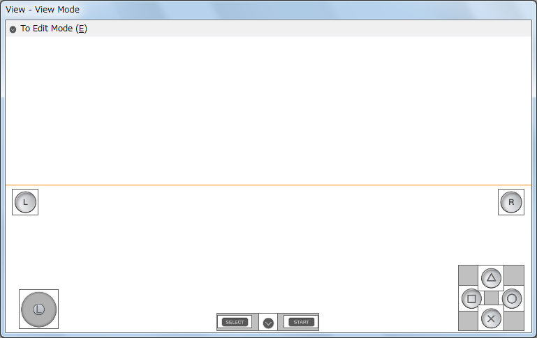

Main Window
The window to specify the various parameters related to the OSC with numerical values and check boxes, etc.
Menu
File
Here, the osc.cfg file can be loaded and saved, etc.
New
Initializes the OSC Customize Tool settings.
Load
Loads the OSC Customize data file.
Save
Saves the Customize data that is currently being edited to a file.
Exit
Exits the tool.
Background
Here, the settings can be performed for the background image displayed in the View Window. For example, a screen shot of the game screen can be displayed to compare balance with the OSC.
Load
Loads an image file and displays it for the View Window background. For a Single image, the loaded image is displayed for the entire background. For a Dual image, it is displayed for the upper half.
Clear
Clears an image loaded with Load in the Background menu.
Tabs
Use
Specifies the display status for categories and buttons that will be used as the OSC.
Category
Specifies the display status of each category.
DPad Key, Face Buttons, Select/Start
Specifies the display properties of the buttons in the categories. If a parent category is hidden, all of the buttons in the category will be hidden.
Default Show
Sets the OSC display at first startup (the player can be displayed/hidden using the menu).
- ON: Display: (however, if a gamepad device exists in the Android device, it will be automatically set to hidden)
- OFF: Hidden
Single Screen/Dual Screen
Specifies the coordinates of each category and button.
Category
Specifies the display coordinates of each category in inches. The origin is at the center of the rectangle. For the Y coordinate only, specification is a percentage from the top of the View Window client screen. In the case of a Dual Screen, specification is a percentage from the center (orange line) of the View Window client screen.
DPad Key, Face Buttons, Select/Start
Button display coordinates are specified in relative coordinates from the center of the parent categories.
Other Items
Logic Version
Specifies the logic version used for OSC placement.
System Bar
This is a support feature that displays the System Bar in the View Window. The size of the System Bar on a device varies depending on the DPI (dots per inch) of the actual device. This feature should only be used as a guide.